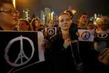
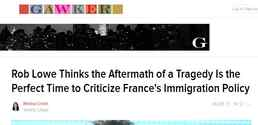
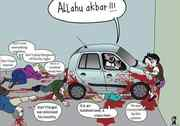
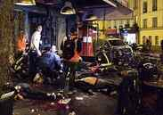

Daryush "Roosh" Valizadeh created ROK in October 2012. You can visit his blog at RooshV.com or follow him on Twitter and Facebook.


The European people do not deserve Europe. That’s the only conclusion I can draw after witnessing the reaction to Friday’s attacks in Paris that killed 136 people. Instead of fighting back, rescinding policies that allow millions of refugees to flood Europe, or devising concrete plans to expel an incompatible Muslim horde from their nations, the European elite are doubling down on a narrative that will surely lead to the end of Europe and the demise of their own people.
If a purple man comes up to you and punches you in the face, the suitable response is to punch him back or get aid from other individuals that help neutralize him. The wrong response is to yell “peace” and “solidarity” at the purple man, and then flood the internet with messages of “Not all purple men are violent” and “Will the brutal attack against myself increase racism and hate against purple men?” Yet in a shocking display of weakness and demoralization, the European people are doing just that. The elites controlling the show are urging prayers for peace and the commoners, in the face of their own annihilation, are going along for the ride, insisting that what Europe needs right now is more Muslims and refugees.
Believe it or not, holding peace signs while crying will not stop future attacks…

Neither will making pretty hearts with lighted candles…
And neither will attacking those who criticize open border policies…

Oh, NOW France closes its borders. #Hollande
— Rob Lowe (@RobLowe) November 13, 2015
If there are not rebellions in France, Germany, or Sweden by the end of this week from groups who want to preserve their nation and people, Europe is over. If the Europeans are not ready to sacrifice their lives right now to save themselves after the Paris attacks while Muslims are themselves waiting in line to sacrifice their own lives to conquer a new land, then Europe has absolutely no chance of resisting an Islamic takeover, because there will be no other event that can help them wake up and defend themselves. I’m afraid what we’re witnessing is a people who have been so feminized, weakened, and mentally controlled that they simply can’t identify an enemy within their broken gates that threatens their way of life, and is instead aiding the invaders who are actively trying to replace them.


Can you imagine what the average Muslim man in Europe is thinking right now? He must be in disbelief that the European elite are welcoming him with open arms, giving him money, kicking out residents from their homes so that him and his brethren can get free housing, and making excuses for him if he happens to decide to pick up an AK-47 and do some human target practice. I’m sure he’s flabbergasted that whenever an attack happens, millions of Europeans swarm social media to defend his religion as one of “peace.”
If I was this man, I would no doubt believe that Allah has opened this lighted path for me, and has made me strong to take over a weak people who no longer deserve the land they’ve been given. I don’t blame him for wanting to take over Europe since the European people and their leaders sure seem to want him to accomplish that task, even putting him on the payroll of their welfare system to help fund his violence.
Muslims are going to do what you allow them to do, along with any other group or race that possess their own interests. We must instead look at the traitorous elites in power who are enabling this horde to enter Europe. Those leaders who have welcomed Muslims into Europe and refused to put a stop to the invasion have blood on their hands and must be removed from power and imprisoned. If Europe was a sane country, here’s what must immediately be done:
If you wanted to defend a nation in the face of a migrant land and sea invasion, the above three measures would be the way to do it, but we all know they won’t take place. Instead, more refugees will come, more “solidarity” will be preached, and more European people will die. Europeans have become so brainwashed that they will rationalize the deaths of their own family members at the hands of the invaders, meaning that we have passed the point where arguments and reason will be effective. Violence is now the future of Europe, either by the hands of the invaders or by its defenders who will have to fight against three enemies at the same time: their elite, their brainwashed countrymen, and the Muslim invaders themselves.
If I was an angry French or German man at this moment, I know what I would do:
The mission would put out a signal to other nationalist militia and patriots. Either we solidify our position and expand with external support or we die trying to defend our country. I could not think of a more honorable way to leave this Earth, of asserting my destiny in a world where lunatic terms are being dictated to me that harm myself, my family, and my nation. If my enemy is willing to die for my land but I’m not, it’s safe to say that odds are against me holding on to that land.
The same liberals who are destroying Europe are also working on doing the same to America. Our politicians are tripping over themselves to increase the amount of Syrians who will come here (10,000 have just arrived in New Orleans), and just like in Europe, the natives are doing nothing more than impotently tweeting in protest. While Muslims are more effectively controlled in America than Europe, Americans needs to ask themselves right now what kind of country they want to live in. My family currently leaves near multiple refugee centers, and when I visit them I’m not sure if I’m in Honduras or Ethiopia. The fate of all American and European citizens are now sealed: either live in fear as you’re surrounded by a foreign people who aggressively assert their interests as their population increases, or defend yourself violently against policies by the elite that are actively trying to destroy your life and displace you from your home.
The current generation of Europeans didn’t fight for their land like their ancestors did. They were given functioning civilization, beautiful cities, and peaceful villages without understanding the sacrifices men of the past had to make in order for them to enjoy what they have now. Multiculturalism will prove to be their suicide, and the only question is if there are some men left who are ready to sacrifice themselves for their country like men of the past did. In the face of the Paris attack, I’m afraid that if we don’t see this sacrifice soon, as in a matter of days, it will be over for Europe.
Read Next: Death Toll Climbs In Paris As Media Rushes To Downplay Connection To Muslim Terrorism